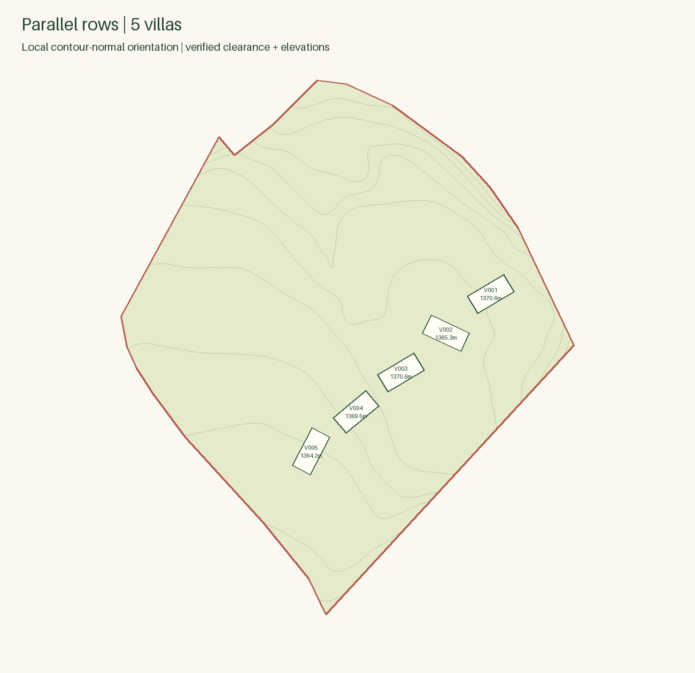
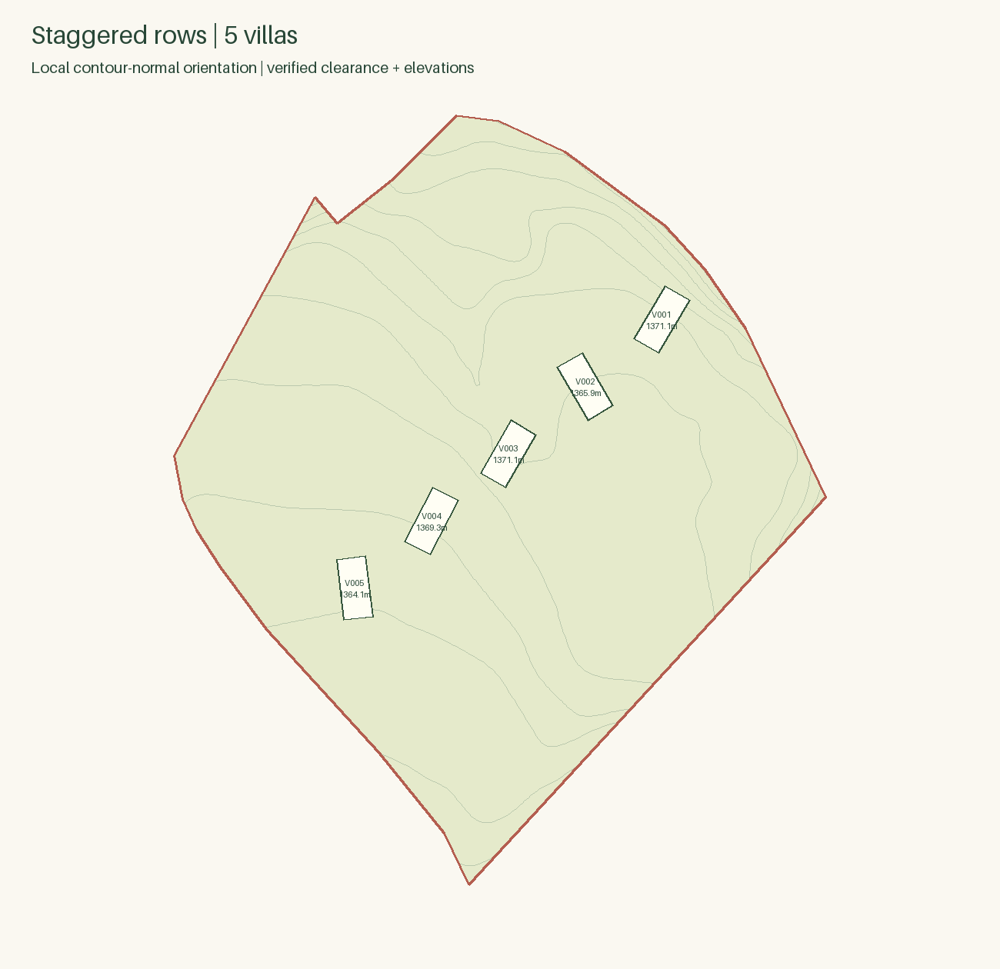

Parallel rows
5 villas · row pitch 148.05 m · all checks passed

Staggered rows
5 villas · row pitch 108.05 m · all checks passed

Exact footprints and pad levels. Live elevation labels interpolated by 8-neighbour inverse-distance squared weighting on a 4 m grid; label insertion anchors approximate spot XY. Orientation follows live tagged smoothed/inferred contours.
Landscape, roads and final terrain are not designed.
5 villas · row pitch 148.05 m · all checks passed

5 villas · row pitch 108.05 m · all checks passed
